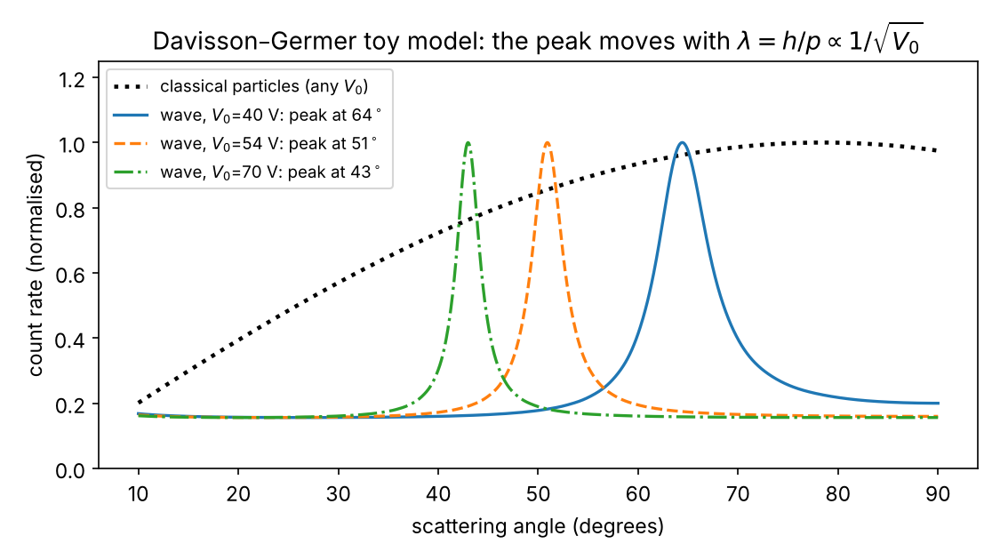
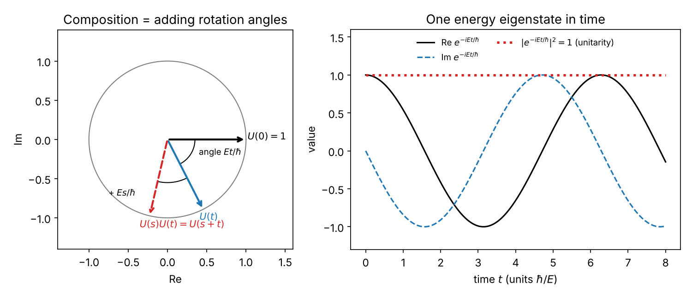
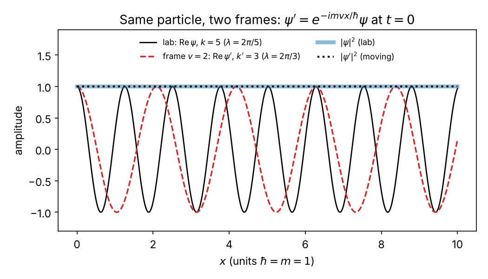
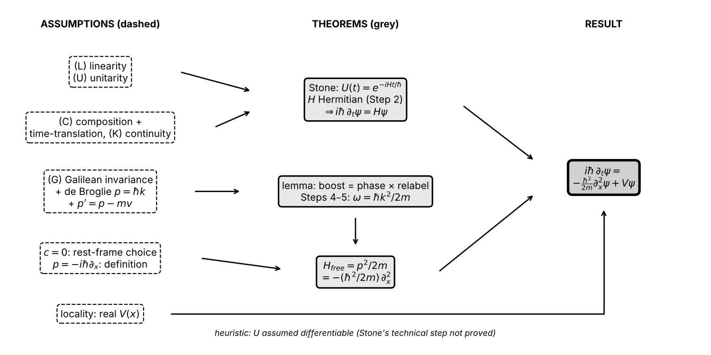

Fire electrons at a nickel crystal and they land in the pattern of a wave with wavelength $h/p$; put neutrons through a silicon interferometer and their phase shifts by (energy difference × time)/$\hbar$; those two facts, plus a few general assumptions and Galilean invariance, pin down the Schrödinger equation. Every step below is labelled assumption, theorem (follows from what precedes), or heuristic.
1. Experiments
Davisson–Germer (1927). Electrons accelerated through a voltage $V_0$ (54 V in the famous run) hit a nickel crystal. Observed: the collected current versus angle has a sharp peak (near 50°) close to where a wave of wavelength $\lambda = h/p$ would be Bragg-reflected by the crystal planes, $p$ being the momentum from $V_0$; the match becomes quantitative once refraction by the crystal's inner potential is included. Raising $V_0$ shrinks $\lambda \propto 1/\sqrt{V_0}$ and so moves the peak (Bragg: $\sin\theta \propto \lambda$). Idealization: monoenergetic beam, perfect crystal.
Single-electron build-up (Tonomura et al. 1989; earlier Merli, Missiroli & Pozzi 1974). Electrons sent one at a time through an electron biprism. Observed: each electron arrives as one click at one place; the clicks accumulate into interference fringes.
Colella–Overhauser–Werner (1975). A neutron beam is split in a single silicon crystal, the two paths run at different heights (vertical separation $\Delta z$, up to a few cm), then recombine. Observed: tilting the crystal shifts the interference fringes. The ideal formula is phase difference $= m g\Delta z\, T/\hbar$, with $m$ the neutron mass and $T$ the transit time; the 1975 data agreed with it within the experiment's uncertainty, roughly 10%; later, more precise runs reached about 1% and found a small residual discrepancy that is still discussed. Since $T = L/v = Lm/p$ at fixed wavelength, the ideal phase is $\propto m^2$: mass enters once through the potential $mgz$ and once through the transit time. A classical wave like sound or light, with $\lambda = h/p$ put in by hand, has no particle mass $m$ in its phase, so it cannot give a shift $\propto m^2$.
Rotating-frame neutron interferometry (Werner, Staudenmann, Colella 1979). The same interferometer, carried round by the Earth: observed a phase shift set by the Earth's rotation rate. This is a non-inertial (rotating) frame, so it is related to but not the same as boost covariance. Uniformly boosted interferometers are not, to my knowledge, tested directly, so below Galilean invariance is an assumption backed by these results and by the classical limit.
![Left: the COW interferometer. The beam splits at A, one path runs Δz higher than the other, and the paths recombine at D. Right: model counts vs crystal tilt φ, phase Δφ = m g Δz₀ sin φ T/ħ with illustrative values Δz₀ = 2 cm and T = 10 µs (not the 1975 apparatus, which enclosed a larger area and gave more fringes): ±15.6 rad at ±30°, about 5 fringes. In this ideal model a massless classical wave has no m in its phase and gives the flat dotted line; the real apparatus also shows tilt effects from crystal bending.](figures/a-cow-fringes.png)
Sources: Davisson & Germer, Phys. Rev. 30, 705 (1927); Tonomura et al., Am. J. Phys. 57, 117 (1989); Colella, Overhauser & Werner, Phys. Rev. Lett. 34, 1472 (1975); Staudenmann et al., Phys. Rev. A 21, 1419 (1980); Werner, Staudenmann & Colella, Phys. Rev. Lett. 42, 1103 (1979); Rauch & Werner, Neutron Interferometry, chapter on gravitational and inertial effects; Sakurai & Napolitano, §2.7.
2. Classical candidates these rule out
- Classical particles (straight paths, possibly bouncing off atoms): a broad angular spread, no peak that moves with $1/\sqrt{V_0}$. Ruled out by Davisson–Germer.
- Classical scalar wave (like sound) with $\lambda = h/p$ put in by hand: reproduces the diffraction peak, but (i) its energy spreads over the whole detector instead of arriving as single clicks, and (ii) its phase contains no parameter $m$, so the COW shift has no place to come from. Ruled out by the single clicks (Tonomura) and by COW.
What survives: a complex amplitude $\psi(x,t)$ whose squared modulus gives click probabilities (you already have this), whose phase carries energy × time / $\hbar$. The question is what equation $\psi$ obeys.

Sources: Feynman Lectures III, ch. 1–2.
3. Model: state vector plus time-evolution operator
Write the state at time $t$ as a vector $|\psi(t)\rangle$ (for one particle on a line, the function $\psi(x,t)$). Four assumptions:
(L) Linearity — assumption, from experiment. Superposed beams (COW, double slits) evolve as the sum of the separately evolved beams, so there is a linear operator with $|\psi(t_2)\rangle = U(t_2,t_1)|\psi(t_1)\rangle$.
(U) Unitarity — assumption. Total probability $\sum|c|^2 = 1$ is conserved for every state, which (as you saw before) forces $U^\dagger U = 1$. The other half, $UU^\dagger = 1$, needs $U$ invertible, which (C) below supplies: $U(-t)$ undoes $U(t)$.
(C) Composition — assumption. $U(t_2,t_1)U(t_1,t_0) = U(t_2,t_0)$. Add time-translation invariance (assumption: the apparatus does not change in time), so $U$ depends only on elapsed time, $U(s)U(t) = U(s+t)$ for all real $s,t$, $U(0) = 1$.
(K) Continuity — assumption. $U(t)|\psi\rangle$ changes continuously with $t$ for every state.
Theorem (Stone, 1932): a strongly continuous one-parameter family of unitaries obeying $U(s)U(t)=U(s+t)$ is $U(t) = e^{-iHt/\hbar}$ for a unique self-adjoint $H$ (in infinite dimensions $H$ is defined only on a dense set of states; "self-adjoint" is the careful version of "Hermitian" used below). In finite dimensions, continuity ⇒ differentiability is itself a theorem. In infinite dimensions, with $H$ unbounded (as the free $H$ of §4 is), $U(t)$ is not differentiable as an operator; only $U(t)|\psi\rangle$ is, and only for $|\psi\rangle$ in the dense domain of $H$. I will not prove this, which is Stone's technical content; I assume (heuristic) that $U(t)|\psi\rangle$ is differentiable in $t$ for every $|\psi\rangle$ in a dense set, and read every operator equation below as acting on such states.
Step 1 (differentiate the composition law). For small $\epsilon$, $$\frac{U(t+\epsilon)-U(t)}{\epsilon} = \frac{U(\epsilon)U(t)-U(0)U(t)}{\epsilon} = \frac{U(\epsilon)-U(0)}{\epsilon}\,U(t).$$ Let $\epsilon \to 0$: $dU/dt = A\,U(t)$ with $A \equiv U'(0)$ a fixed operator. Theorem given differentiability. This is why the equation is first order in time: the rate of change of $U$ is a fixed operator times $U$ itself, so the present state alone fixes the future.
Step 2 ($A$ anti-Hermitian ⇔ $U$ unitary). Differentiate $U^\dagger U = 1$ at $t=0$ (product rule, $U(0)=1$): $A^\dagger + A = 0$. Define $H \equiv i\hbar A$; then $H^\dagger = -i\hbar A^\dagger = i\hbar A = H$. Converse: if $H^\dagger = H$ then $\frac{d}{dt}(U^\dagger U) = U^\dagger(A^\dagger + A)U = 0$ and $U^\dagger U = 1$ at $t=0$, so for all $t$. Theorem, both directions. The constant $\hbar$ is a unit conversion (assumption: any positive constant works here; calling it $\hbar$ is the choice to measure $H$ in joules, and that $H$'s eigenvalues are the measured energies is fixed by experiment, e.g. $E=\hbar\omega$ in §4).
Step 3 (solve). $dU/dt = -(i/\hbar)HU$, $U(0)=1$, $H$ constant. $U(t) = e^{-iHt/\hbar}$ (power series) satisfies it: differentiate term by term. Uniqueness: if $V(t)$ also satisfies it, $\frac{d}{dt}\big(e^{iHt/\hbar}V\big) = e^{iHt/\hbar}\big(\tfrac{i}{\hbar}H - \tfrac{i}{\hbar}H\big)V = 0$, so $e^{iHt/\hbar}V(t) = 1$ for all $t$. Theorem. Apply to a state and differentiate: $$i\hbar\,\frac{d}{dt}|\psi(t)\rangle = H\,|\psi(t)\rangle.$$ The Schrödinger equation in form: first order, linear, Hermitian generator. Check: $H|E\rangle = E|E\rangle$ gives $|\psi(t)\rangle = e^{-iEt/\hbar}|E\rangle$, your stationary states.
Not yet fixed: $H$ itself. Any Hermitian operator passes steps 1–3.

Sources: Ballentine §3.7 (equation of motion from time displacement); Weinberg, Lectures on QM, ch. 3 (uses $U = e^{-iHt}$ without proving Stone's theorem); Sakurai & Napolitano §2.1.
4. Galilean invariance fixes $H$
Assumption (G): the free-particle law is the same in a frame moving at any constant velocity $v$ (all real $v$). If $\psi(x,t)$ describes the particle in the lab, the moving observer uses $x' = x - vt$, $t' = t$ and a wavefunction $\psi'$ obtained by (G0) a linear map from $\psi$ (assumption; alternatively Wigner's theorem plus continuity in $v$, since boosts connect to $v=0$, which excludes the antiunitary option), with (G1) the same $|\psi'|^2$ at the same physical point (a click is a click) and (G2) satisfying the same Schrödinger equation, with the same $H$.
Lemma (theorem, elementary): a linear map $T$ that preserves $|\psi|^2$ pointwise is multiplication by a phase function. Sketch: $|T\psi| = |\psi|$ alone says $T\psi$ vanishes wherever $\psi$ does, so the value of $T\psi$ at a point can depend only on $\psi$ near that point. Locality and a common phase: take $\psi_1, \psi_2$ with overlapping support, each $T\psi_j = e^{i\alpha_j}\psi_j$ with possibly different phase functions; linearity gives $T(\psi_1+\psi_2) = e^{i\alpha_1}\psi_1 + e^{i\alpha_2}\psi_2$, and $|T(\psi_1+\psi_2)| = |\psi_1+\psi_2|$ at every point of the overlap forces $\alpha_1 = \alpha_2$ there (compare $|e^{i\alpha_1}\psi_1 + e^{i\alpha_2}\psi_2|^2 = |\psi_1|^2 + |\psi_2|^2 + 2\,\mathrm{Re}\,\psi_1^*\psi_2 e^{i(\alpha_2-\alpha_1)}$ with the unboosted value). So $$\psi'(x',t') = e^{i\theta(x',t';v)}\,\psi(x'+vt',t'),$$ with $\theta$ one fixed function, not depending on which $\psi$ is boosted. (Bargmann's 1954 theorem is a different, deeper result: it classifies all possible phase conventions for the whole Galilei group by one constant, the mass. It is not needed here.)
Input from experiment: de Broglie, $p = \hbar k$ (Davisson–Germer), and classical velocity addition $p' = p - mv$ for the momentum measured in the moving frame. This is exactly where the classical limit enters (assumption); the commutator route (Ballentine §3.4) derives it from the Galilei algebra instead. So a plane wave of wavenumber $k$ must become one of wavenumber $k' = k - mv/\hbar$.
Step 4 (boost a plane wave). This is where (G2) does its work. Take $\psi = e^{i(kx - \omega(k)t)}$ with $\omega(k)$ the unknown frequency, i.e. $H e^{ikx} = \hbar\omega(k)e^{ikx}$. Relabelling gives $\psi(x'+vt',t') = e^{i(kx' + kvt' - \omega(k)t')}$. (G2) demands that $e^{i\theta}$ times this be a solution in the moving frame with the same function $\omega$: the plane wave $e^{i(k'x' - \omega(k')t')}$. So $\theta = [k'x' - \omega(k')t'] - [kx' + kvt' - \omega(k)t']$; the $x'$ terms give $(k'-k)x' = -(mv/\hbar)x'$, the $t'$ terms give $[\omega(k) - kv - \omega(k')]t'$: $$\theta = -\frac{mv}{\hbar}x' + \big[\omega(k) - kv - \omega(k - mv/\hbar)\big]\,t'.$$
Step 5 ($\theta$ must not depend on $k$). The $x'$ coefficient already doesn't. Set $u = mv/\hbar$ ($u$ ranges over all reals since $v$ does) and require $\omega(k) - (\hbar u/m)k - \omega(k-u)$ independent of $k$. Assume $\omega$ differentiable and differentiate in $k$: $\omega'(k) - \omega'(k-u) = \hbar u/m$ for all $k,u$. Define $g(k) \equiv \omega'(k) - \hbar k/m$; then $g(k) - g(k-u) = \hbar u/m - \hbar u/m = 0$ for every $u$, so $g$ is a constant $c$. Integrate: $$\omega(k) = \frac{\hbar k^2}{2m} + c\,k + \omega_0 .$$ Theorem given the assumptions. $\omega_0$ is the zero of energy, invisible in $|\psi|^2$. The $ck$ term is boost-covariant with the same $c$ in every frame, so no frame choice removes it. It is fixed by the classical limit, the same assumption as $p' = p - mv$: the group velocity $d\omega/dk = \hbar k/m + c$ must equal $p/m = \hbar k/m$, so $c = 0$. Equivalently, the rephasing $\psi \to e^{imcx/\hbar}\psi$ removes $ck$ while changing which operator is called momentum; $c=0$ is a convention about $p$. Substituting back, the bracket is $-mv^2/2\hbar$, so $$\theta = -\frac{1}{\hbar}\Big(mv\,x' + \tfrac12 m v^2 t'\Big),$$ the mass-dependent boost phase. Mass entered only as the constant linking the $k$-shift to $v$.
Step 6 (read off $H$). $E = \hbar\omega = \hbar^2k^2/2m$. Definition + experimental identification: momentum is the operator whose eigenvalue on $e^{ikx}$ is the measured $p = \hbar k$; the operator $-i\hbar\,\partial_x$ does this (check by differentiating), and taking it to be $p$ on all superpositions is a definition, with (L) extending it. Then, on one line, $$H_{\text{free}} = \frac{p^2}{2m} = -\frac{\hbar^2}{2m}\,\partial_x^2,\qquad i\hbar\,\partial_t\psi = -\frac{\hbar^2}{2m}\,\partial_x^2\psi .$$ In three dimensions the same steps with a vector $\mathbf k$ and boost $\mathbf v$ give $\hbar\omega = \hbar^2|\mathbf k|^2/2m$ and the Laplacian. Check: $\hbar\omega = \tfrac12 m v_{\text{g}}^2$ with $v_{\text{g}} = d\omega/dk = \hbar k/m = p/m$, the classical kinetic energy.
Adding a potential. Assumption (locality): external forces enter by adding to $H$ a term whose value at $x$ depends only on $\psi$ at $x$ — a real function $V(x)$ multiplying $\psi$. Real $V$ keeps $H$ Hermitian (step 2). This is not derived from (G) — a potential breaks boost invariance — and nothing above excludes other Hermitian additions; locality is the extra assumption, and COW confirms the form for $V = mgz$.

Sources: Ballentine §3.3–3.4 (Galilei generators, mass as central charge) and §4.3 (Galilei transformation of the wavefunction); Weinberg ch. 3; Sakurai & Napolitano §2.4 ($H = p^2/2m + V$ is postulated there); Bargmann, Ann. Math. 59, 1 (1954).
5. How it fits together, and the honest ledger
The same equation is reached by other routes — Feynman's sum over paths with $L = \tfrac12 mv^2$, Heisenberg's matrix form, or the Galilei-algebra route ($[K,P]=i\hbar m$ with $K = mX - tP$; the sign depends on convention) — equivalent formulations, not rivals: identical predictions. Interpretations (Copenhagen-style, many-worlds, pilot-wave, objective collapse) differ about what $\psi$ is and what happens at a click; nothing above depends on that, except that objective-collapse models modify (L) and (U) slightly (their evolution is nonlinear and stochastic), a live experimental question.
| Step | Status |
|---|---|
| $U$ linear | assumption (superposition experiments) |
| $U$ unitary ⇔ $H$ Hermitian | assumption ⇔ theorem (step 2, both directions) |
| composition + time-translation invariance | assumption |
| continuity ⇒ $U = e^{-iHt/\hbar}$ unique | theorem (Stone); differentiability of $U(t)\lvert\psi\rangle$ on a dense set assumed; uniqueness shown |
| $\hbar$ | unit convention, value from experiment |
| boost map linear (G0) | assumption (or Wigner + continuity) |
| boost = phase × relabelling | theorem (lemma) given (G0) + (G1) |
| $p' = p - mv$, same $\omega$ in moving frame | assumption (classical limit, G2) |
| $\omega = \hbar k^2/2m$ | theorem ($\omega$ differentiable); $c=0$ by the classical limit / convention for $p$ |
| $p = -i\hbar\partial_x$ | definition + de Broglie |
| $V(x)$ added | assumption (locality) |

Pros of this route: every ingredient is tied to a measured fact and the mass enters by elementary calculus. Cons: boost invariance is assumed, not directly tested by boosted interferometers; the argument is one-particle and non-relativistic — replacing Galilean by Lorentz invariance gives Klein–Gordon or Dirac instead.
Check yourself: In step 5, what would go wrong if you demanded $\theta$ be independent of $x'$ as well as $k$ — which experiment contradicts that?